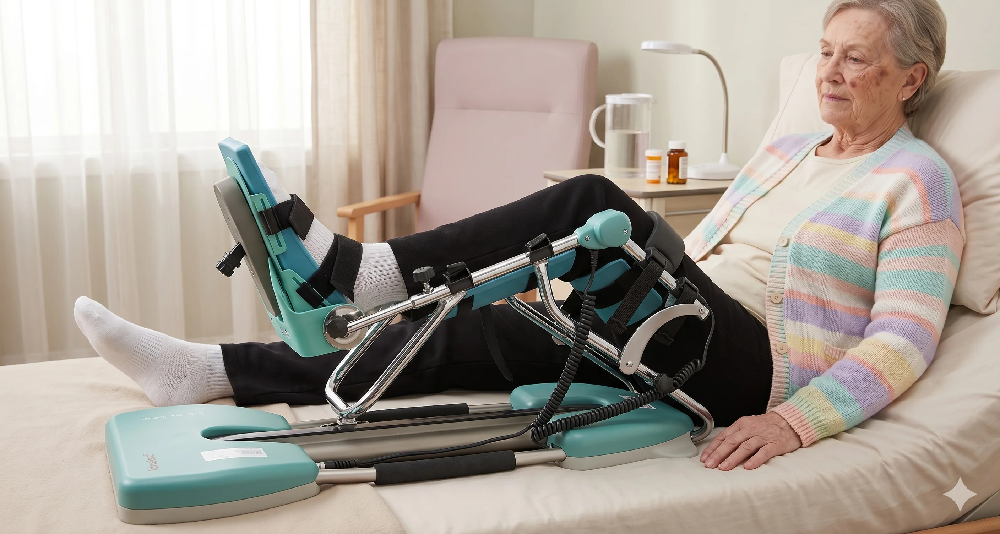
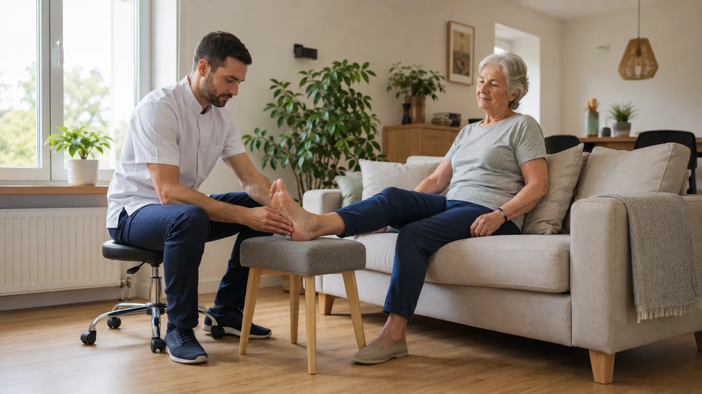
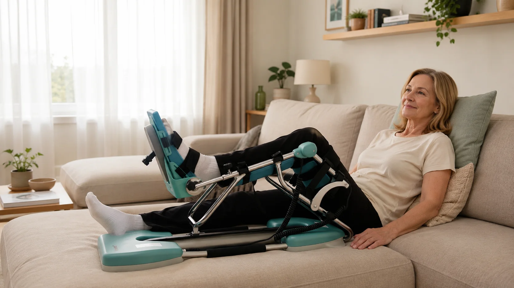
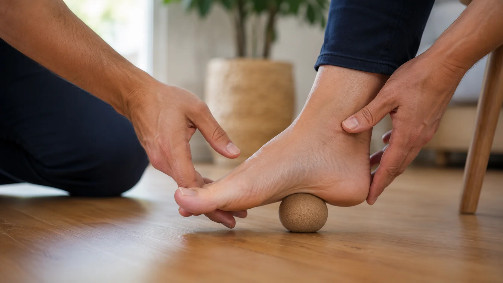
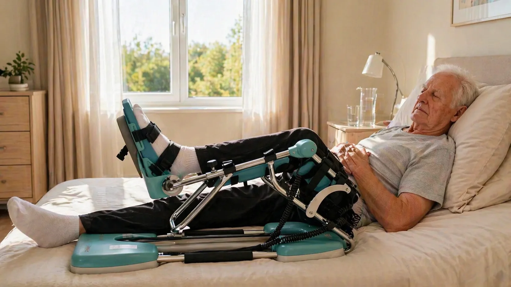
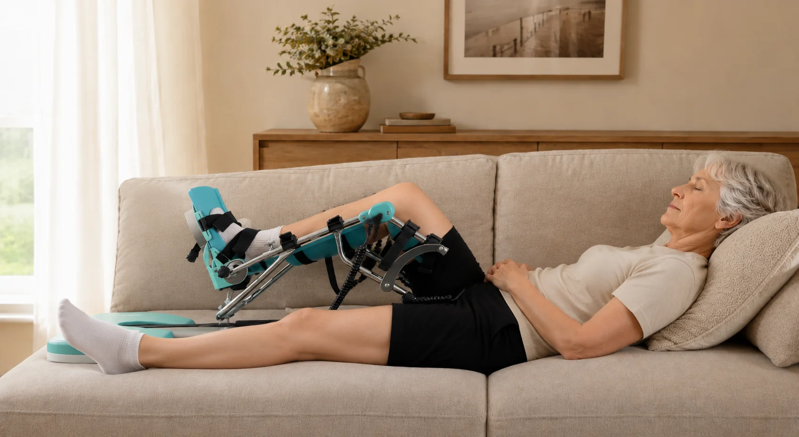
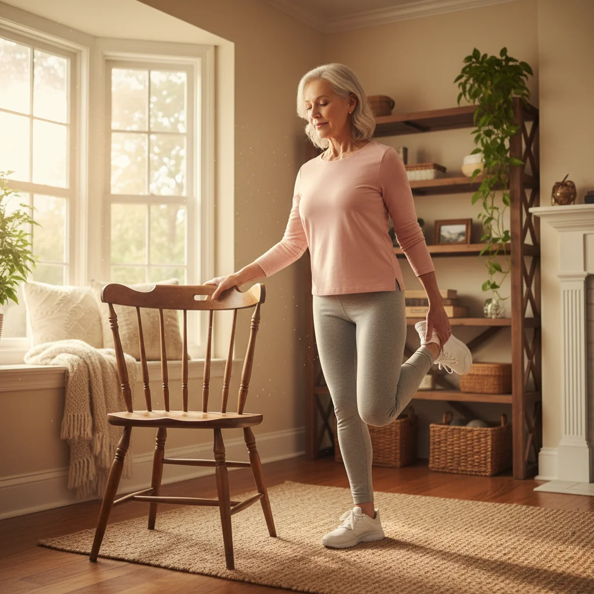
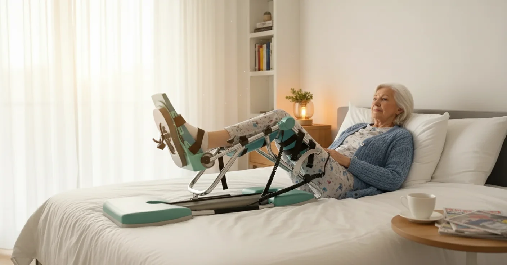
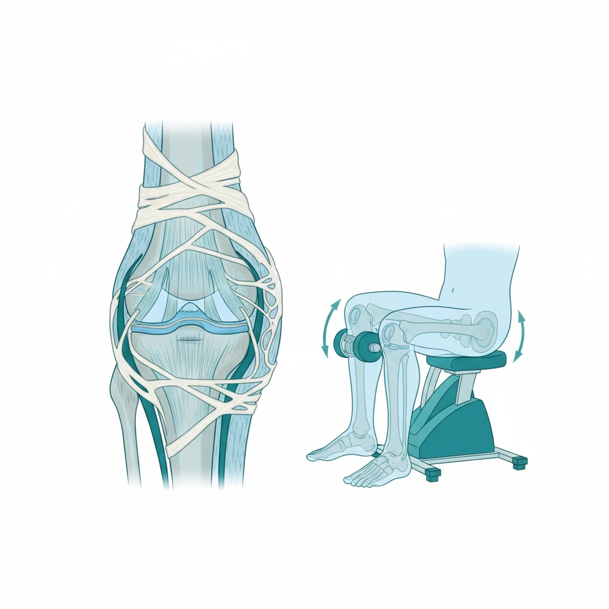
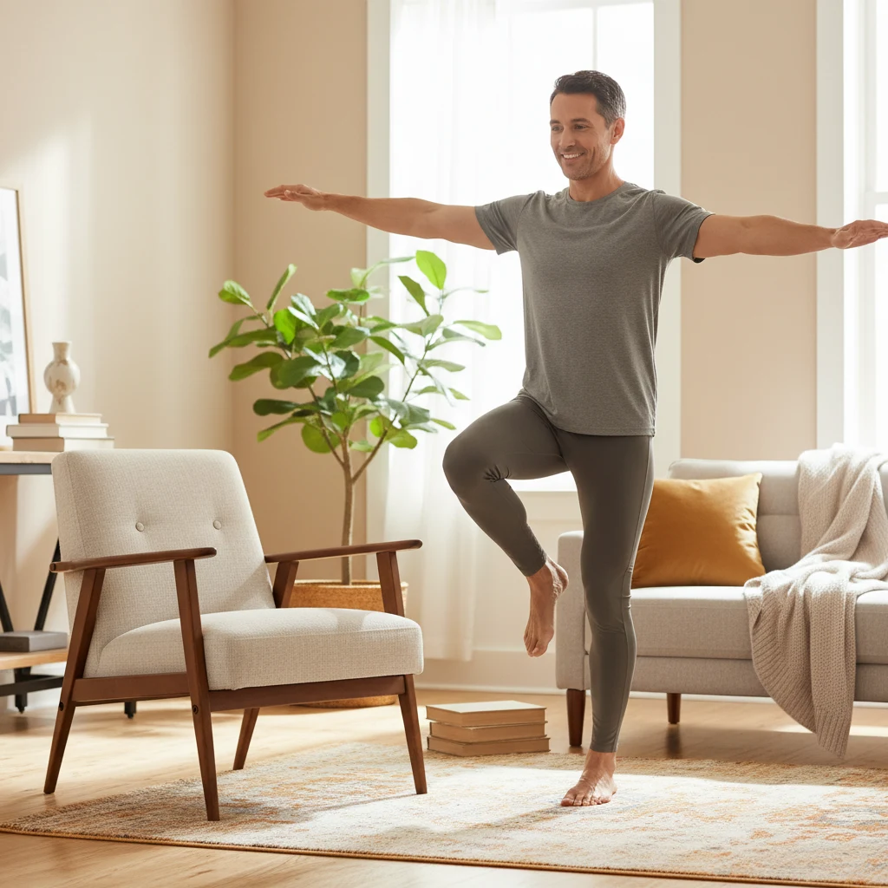

Filter op onderwerp

5 Voordelen van Kinesitherapie aan Huis vs Praktijkbezoek
Ontdek waarom steeds meer patiënten kiezen voor kinesitherapie in de vertrouwde thuisomgeving. Van comfort tot betere resultaten - lees alle voordelen.
Geen artikelen gevonden voor dit onderwerp.

Kinetec na een Knieoperatie met Bakercyste
Waarom de zwelling achter uw knie zit, hoe u toch graden wint en wanneer een gespannen kuit alarm betekent.

Kinesitherapie na een Bekkenfractuur bij Ouderen
Van veilig uit bed komen tot opnieuw zelfstandig stappen: het herstel thuis in vier duidelijke fases.

Kinetec en Werk Hervatten: Thuiswerken na een Knieoperatie
Werken terwijl uw been in de spalk ligt, een dagindeling die zwelling voorkomt en uw uren opbouwen in vier fases.
Kinesitherapie na een Ribfractuur: Herstel Thuis
De rib geneest vanzelf, uw ademhaling niet. De vier oefeningen die een longontsteking helpen voorkomen.
Kinetec Gebruiken als U Alleen Woont na een Knieoperatie
Zelfstandig in en uit de spalk, uw dag indelen in vier vaste sessies en veiligheid regelen zonder iemand in huis.

Lumbale Spinale Stenose: Kinesitherapie en Oefeningen Thuis
Waarom uw benen na tweehonderd meter vollopen, welke oefeningen ruimte geven en hoe u uw wandelafstand weer opbouwt.

Kinetec na een Knieoperatie bij Parkinson: Stijfheid Voorblijven
Waarom rigiditeit een verse knie sneller doet vastlopen, welk schema werkt en hoe u uw sessies plant rond uw medicatie.

Kinesitherapie na een Hallux Valgus Operatie: Herstel Thuis Week per Week
Het herstel in vier fases, waarom de zwelling zo lang aanhoudt en welke oefeningen uw grote teen weer soepel maken.

Kinetec na een Knieoperatie bij Osteoporose: Veilig Buigen met Broze Botten
Waarom passief bewegen bij botontkalking juist beschermt, welk graden-schema past en waar u let op huid, druk en pijn.
Kinesitherapie bij Long COVID aan Huis: Opbouwen zonder Terugval
Waarom conditietraining hier averechts werkt en hoe pacing, ademhaling en een opbouw in vier fases u wel vooruithelpen.

Kinetec na een Knieprothese bij Overgewicht: Waar Moet U op Letten?
Waarom de knie trager plooit bij een zwaarder lichaam, hoe u de spalk correct instelt en welk aangepast graden-schema wel werkt.

Kinesitherapie na een Gebroken Sleutelbeen: Herstel Stap voor Stap Thuis
Het bot geneest vanzelf, de schouder niet: de vier fases van het herstel en welke oefeningen in welke week veilig zijn.

Knie Voorbereiden op een Knieprothese: Prehabilitatie Stap voor Stap
Vijf oefeningen voor de operatie, een aftelkalender van zes weken en waarom u de kinetec best vooraf reserveert.

Kinesitherapie na een Gebroken Bovenarm: Revalidatie Thuis
Het bot geneest in zes tot acht weken, de schouder verstijft sneller: de revalidatie in vier fases.

Kinetec na een Knieoperatie bij Diabetes: Waar U op Let
Tragere wondgenezing, meer kans op verstijving en minder gevoel in het been: zo past u uw schema en uw huidcontrole aan.
Hartrevalidatie Thuis: Kinesitherapie na een Hartinfarct of Hartoperatie
Een wandelschema per week, de Borgschaal als kompas en de sternumvoorzorgen na een bypassoperatie.

Kinetec bij CRPS van de Knie: Pijnvrij Doorbewegen na een Operatie
Posttraumatische dystrofie vraagt de omgekeerde aanpak: hoe u binnen de pijngrens blijft bewegen en in vier fases opbouwt.

Kinesitherapie na een Longontsteking bij Ouderen: Herstel Thuis
Waarom de kracht en de adem na een pneumonie weken achterblijven, en met welke oefeningen u ze stap voor stap terugwint.

Kinetec na een Halve Knieprothese: Revalidatie bij een Unicompartimentele Knie
Waarom het herstel na een partiële knieprothese sneller verloopt, welk graden-schema past en wanneer u uw krukken weglegt.

Polyneuropathie: Kinesitherapie en Oefeningen aan Huis
Zes oefeningen voor doofse, tintelende voeten, een opbouw in vier fases en de aanpassingen die uw valrisico meteen verlagen.

Kinetec en Bloedcirculatie: Bewegen tegen Trombose na een Knieoperatie
Wat passieve beweging wél doet voor uw bloedsomloop, waarom de kinetec uw bloedverdunner niet vervangt en hoe u een klonter in het been tijdig herkent.

Kinesitherapie na een Rughernia-operatie: Herstel Thuis Stap voor Stap
De vier fases van uw revalidatie na een discectomie, de leefregels rond bukken en tillen, en wanneer werk, fietsen en sport weer mogen.
Kinetec met Hechtingen of Nietjes in de Knie: Mag Dat?
Waarom een verse wond geen reden is om te wachten, hoe u het verband beschermt tijdens elke sessie en bij welke signalen u wel moet stoppen.
Kinesitherapie bij Dementie aan Huis: Bewegen in een Vertrouwde Omgeving
Waarom mobiliteit bepaalt hoe lang thuis wonen lukt: oefeningen per fase, valpreventie in huis en praktische tips voor mantelzorgers.

Autorijden na een Knieoperatie: Wanneer Mag U Weer Achter het Stuur?
Links of rechts geopereerd, automaat of manueel, en kunt u wel een noodstop maken? De richttijden, de voorwaarden en een zelftest.
Revalidatie na een Enkelfractuur: Herstel Thuis Stap voor Stap
Gips uit en dan? De vier fases na een gebroken enkel, de oefeningen per fase en waarom uw enkel maanden dik blijft.

Kinetec bij Reumatoïde Artritis van de Knie
Een reumaknie wordt stijf van stilliggen en pijnlijk van forceren. Ontdek hoe passief bewegen die klem doorbreekt en waar u extra op moet letten.

Klapvoet (Dropvoet): Oefeningen en Kinesitherapie aan Huis
Sleept uw voet en struikelt u over drempels? Ontdek de oorzaken van een klapvoet en welke oefeningen de voetheffers weer wakker maken.

Quadriceps Activeren na een Knieoperatie
Uw dijspier wil niet meer aanspannen? Ontdek wat spierinhibitie is, hoe de Kinetec de rem eraf haalt en welke oefeningen de spier wakker maken.
Kinesitherapie na een Borstoperatie: Arm en Schouder Thuis
Stijve schouder of strakke koorden in de oksel? Ontdek welke oefeningen wanneer mogen en hoe u uw arm stap voor stap terugkrijgt.

Kinetec na een Buitenbandletsel (LCL) van de Knie
Waarom de buitenband trager geneest dan de binnenband, welk gradenschema veilig is en welk zenuwsignaal u nooit mag negeren.
Looptraining bij Etalagebenen (Claudicatio Intermittens)
Kramp in de kuit na 200 meter? Waarom doorstappen tot matige pijn de beste behandeling is en hoe u dat schema thuis opbouwt.

Kinetec Instellen en Bedienen Thuis: Stap-voor-Stap Handleiding
Frame op beenlengte, been recht in de steunen, banden losjes: zo bedient u de bedieningsunit correct en weet u wat te doen als het toestel stopt.
Kinesitherapie na een Whiplash: Herstel Thuis Stap voor Stap
Nekpijn na een aanrijding? De vier herstelfases, oefeningen binnen de pijngrens en waarom een halskraag het herstel juist vertraagt.

Krakende en Klikkende Knie na een Knieprothese: Wat Is Normaal?
Metaal en polyethyleen dempen niet zoals kraakbeen. Waarom uw prothese geluid maakt, welke signalen wél tellen en hoe soepelheid de knie stiller maakt.
Wervelkanaalstenose: Kinesitherapie en Oefeningen aan Huis
Na 100 meter zware benen, maar fietsen lukt wél? Over neurogene claudicatie, flexieoefeningen en looptraining in blokjes die uw afstand vergroot.
Trappenlopen na een Knieoperatie: Hoeveel Graden Buiging Heeft U Nodig?
De trap op vraagt 85 tot 95 graden, de trap af tot 110 graden. Welke drempels u moet halen en hoe de kinetec u er dag na dag naartoe brengt.

Kinesitherapie bij Multiple Sclerose (MS) aan Huis
Kracht, evenwicht en conditie onderhouden zonder uw energie op te branden. Over pacing, de 24-uursregel en oefenen bij warm weer.
Kinetec na een Achterste Kruisbandoperatie (PCL)
Bij een PCL werkt de zwaartekracht tegen uw nieuwe band. Waarom het onderbeen ondersteund moet blijven en welk gradenschema veilig is.
Gangrevalidatie na een Beenamputatie: Oefenen met Prothese Thuis
De vier fases van het traject, waarom een contractuur uw prothese saboteert en welke oefeningen u thuis al doet vóór uw eerste prothese.

Kinetec bij Knieartrose Zonder Operatie: Zinvol of Niet?
Geen kraakbeenherstel, maar wel vier situaties waarin een CPM-toestel bij artrose graden oplevert — en wanneer u beter iets anders kiest.

Slijmbeursontsteking van de Heup: Oefeningen voor Thuis
Niet meer op uw zij kunnen liggen? Waarom rekken de klacht in stand houdt en welke opbouw in vier fases wél werkt.
Kinetec na een Binnenbandletsel (MCL) van de Knie
De band geneest meestal vanzelf, maar de knie verstijft in de brace. Zo houdt u het gewricht soepel zonder de band te belasten.
Kinesitherapie bij Parkinson aan Huis
Kleine pasjes, vastlopen in de deuropening en valangst. Hoe cueing en gerichte oefeningen thuis uw zelfstandigheid langer bewaren.
Kinetec na een Distale Femurfractuur: Knie Soepel Houden
Een breuk vlak boven de knie geneest wél, maar het gewricht loopt vast. Zo benut u de weken waarin u nog niet mag steunen.

Patellofemoraal Pijnsyndroom: Knieschijfpijn Thuis Aanpakken
Pijn voor de knieschijf bij trappen en lang zitten, terwijl de scan niets toont. Een oefenschema van 12 weken dat wél werkt.
Kinetec na een Dubbele Knieprothese: Beide Knieën Tegelijk
Twee verse knieën en geen goed been om op te steunen. Zo verdeelt u één Kinetec over links en rechts zonder graden te verliezen.

Wervelinzakking bij Osteoporose: Veilig Herstellen Thuis
Een wervel die inzakt doet weken pijn, maar stilliggen maakt het erger. Welke bewegingen veilig zijn en hoe u een tweede breuk voorkomt.
Kinetec na een Quadricepspees- of Patellapeesruptuur
Het strekapparaat van uw knie is gehecht en moet tegelijk rusten én bewegen. Zo wint u graden zonder de hechting te belasten.
Ischias: Uitstralende Beenpijn Thuis Behandelen
Pijn van uw bil tot in uw kuit? Vier oefeningen die thuis veilig zijn, de twee klassieke fouten en de alarmsignalen die niet kunnen wachten.
Kinetec na een Patellaluxatie: Knieschijf uit de Kom
Waarom uw knie na een luxatie zo snel verstijft, welk gradenschema veilig is binnen uw brace en hoe u een nieuwe luxatie voorkomt.
Tenniselleboog: Oefeningen Thuis die Wél Werken
Waarom rusten de klachten niet oplost, welke vier oefeningen u dagelijks doet en hoe u ze in vier fases opbouwt tot u weer pijnvrij tilt.
Kinetec na een Revisie van een Knieprothese
De tweede knieoperatie verloopt trager dan de eerste. Ontdek waarom passief bewegen dan extra telt en welk gradenschema realistisch is.
Kinesitherapie aan Huis na een Heupfractuur bij Ouderen
Van de eerste transfer tot terug buiten wandelen: de vier fases van het herstel, de oefeningen die het meeste opleveren en hoe u een tweede val voorkomt.

Kinetec in Bed of in de Zetel: de Beste Opstelling Thuis
Waar zet u het toestel het best neer? Ontdek de voordelen van elke opstelling, hoeveel plaats u nodig heeft en de fout die veel patiënten graden kost.

Cervicogene Duizeligheid: Duizelig door de Nek Behandelen
Zweverig én een stijve nek? Ontdek hoe uw nekwervels uw evenwicht verstoren, hoe u het onderscheidt van andere duizeligheid en welke oefeningen helpen.

Kinetec na Ontslag uit het Ziekenhuis: Thuis Verder Oefenen
In het ziekenhuis kreeg u dagelijks een Kinetec, thuis plots niet meer. Ontdek waarom die onderbreking uw knie graden kost en hoe u de overgang vlot regelt.
Carpaaltunnelsyndroom: Oefeningen en Kinesitherapie aan Huis
Tintelende of slapende vingers 's nachts? Ontdek de oorzaken, welke zenuwglijoefeningen thuis helpen en wanneer u beter niet langer wacht met behandeling.
Kinetec na Manipulatie onder Narcose (MUA): Stijve Knie Doorbewegen
Blijft uw knie te stijf en is een manipulatie onder narcose gepland? Ontdek wat een MUA inhoudt en waarom de Kinetec daarna beslissend is om de buiging te behouden.
Heupartrose: Kinesitherapie en Oefeningen om Thuis te Doen
Pijn en stijfheid in de heup door coxartrose? Ontdek waarom bewegen net helpt en welke oefeningen thuis de pijn verlichten en de heup soepel en sterk houden.
Kinetec Flexie: Uw Knie Leren Buigen na een Knieoperatie
Voldoende kniebuiging is cruciaal om te kunnen opstaan, traplopen en fietsen. Ontdek hoeveel graden u wanneer moet halen en hoe de Kinetec u daarbij helpt.
Hielspoor en Fasciitis Plantaris Thuis Behandelen met Kinesitherapie
Stekende hielpijn bij de eerste stappen? Ontdek wat hielspoor is, welke oefeningen echt helpen en wanneer kinesitherapie aan huis het verschil maakt.

Kinetec na Tibiaplateaufractuur (Gebroken Knieplateau): Revalidatie Thuis
Bij een gebroken knieplateau mag u weken niet steunen, maar de knie moet wel soepel blijven. Ontdek hoe de Kinetec die balans veilig bewaart, met week-per-week schema.
Achillespees Revalidatie Thuis: Kinesitherapie en Oefeningen
Pijn aan de achillespees houdt veel mensen maandenlang aan de kant. Toch is rust zelden de oplossing. Ontdek de herstelfasen, de juiste oefeningen en wanneer kinesitherapie helpt.
Kinetec na Kraakbeenoperatie (Microfractuur): Knie Revalidatie Thuis
Waarom continue passieve beweging onmisbaar is voor kraakbeenherstel, het revalidatieschema week per week en hoe u de Kinetec thuis correct gebruikt.
Revalidatie na Enkelverstuiking: Kinesitherapie en Oefeningen Thuis
Een verzwikte enkel is meer dan een blauwe plek. Ontdek de herstelfasen, oefeningen voor thuis en hoe evenwichtstraining chronische instabiliteit voorkomt.
Stijve Knie na Knieprothese: Arthrofibrose Voorkomen met Kinetec
Waarom een knie soms stijf wordt na een prothese, hoe de kinetec dit helpt voorkomen en wanneer een manipulatie onder narcose nodig is.
Kinesitherapie na een Beroerte (CVA): Revalidatie aan Huis
Hoe gerichte kinesitherapie thuis het herstel na een beroerte ondersteunt: de fasen, oefeningen voor evenwicht en stappen, en de rol van de mantelzorger.
Kinetec na Knie-Osteotomie (HTO): Revalidatie Schema en Tips
Bij een ascorrectie van de knie mag u wekenlang niet belasten. Waarom de Kinetec dan ideaal is, plus een week-per-week schema voor uw revalidatie.
Polsfractuur Revalidatie Thuis: Kinesitherapie en Oefeningen
De drie fasen van herstel na een gebroken pols, praktische oefeningen voor thuis en wanneer kinesitherapie aan huis het verschil maakt.
Kinetec na Patellafractuur (Knieschijf): Revalidatie en Herstel
Een gebroken knieschijf vraagt om voorzichtige mobilisatie. Schema, graden en tips per type ingreep voor uw Kinetec na een patellafractuur.
Frozen Shoulder (Bevroren Schouder) Thuis Behandelen
De 3 fasen van een frozen shoulder, 7 effectieve thuisoefeningen en hoe kinesitherapie aan huis uw herstel versnelt.

Kinetec na Knie Artroscopie: Revalidatie en Herstel
Wanneer is een Kinetec CPM machine zinvol na een kijkoperatie van de knie? Schema, graden en tips per type ingreep.

Hometrainer Schema na Knieoperatie: Week per Week
Wanneer starten, hoe lang fietsen en welke weerstand instellen? Praktische week-per-week gids voor uw knierevalidatie.

Verklevingen in de Knie na Operatie: Oorzaken, Symptomen en Hoe Kinetec Helpt
Wat is artrofibrose, waarom ontstaat het en hoe voorkomt een Kinetec CPM machine verklevingen na uw knieoperatie?

7 Evenwichtsoefeningen voor Thuis: Verbeter uw Balans Stap voor Stap
Praktische balansoefeningen met duidelijke instructies voor alle leeftijden. Van beginner tot gevorderd.
Kinetec en Extensiedeficit: Knie Strekken na een Knieoperatie
Wat is een extensiedeficit, waarom is het gevaarlijk en hoe helpt de Kinetec CPM machine om uw knie volledig te strekken na een operatie?
COPD en Ademhalingstherapie: Kinesitherapie aan Huis voor COPD-Patienten
Hoe begeleidt een thuiskinesitherapeut COPD-patienten met ademhalingsoefeningen, sputumklaring en inspanningstraining?

Kinetec 's Nachts Gebruiken: Mag Het en 8 Comforttips voor Betere Nachtrust
Wanneer is nachtgebruik zinvol na een knieprothese? Ontdek de risico's en 8 praktische comforttips voor veilig nachtgebruik.
Wanneer Kunt U Stappen Zonder Loopstok na een Knieprothese?
4 criteria om klaar te zijn, week-per-week tijdlijn en 5 oefeningen om sneller zonder hulpmiddelen te stappen.
Knie Zwelling na Operatie Verminderen: Hoe Kinetec en Thuiszorg Helpen
5 bewezen manieren om zwelling na een knieoperatie te verminderen — van RICE tot Kinetec CPM en voeding.
Artrose in de Knie: Kinesitherapie Oefeningen voor Thuis
7 effectieve thuisoefeningen bij knieartrose: quadriceps, hamstrings, balans en meer. Evidence-based advies.
Krachtverlies en Ouder Worden: Wat U Moet Weten
Spierverlies op latere leeftijd is normaal — maar ook beïnvloedbaar. Lees hoe kinesitherapie u helpt sterk en zelfstandig te blijven.
Kinetec CPM Machine: Complete Gids voor Knie-revalidatie Thuis
Alles over Kinetec CPM machines voor knie-revalidatie. Instructies, voordelen en huur mogelijkheden.

Postoperatieve Knie-revalidatie: Wat Verwachten en Hoe Te Versnellen
Complete gids voor herstel na knie operatie. Tijdslijn, oefeningen en tips voor optimaal herstel.

Revalidatie na Knieprothese: Tijdlijn & Tips
Week-per-week herstel na knieprothese. Wanneer Kinetec, hometrainer en oefeningen starten. Praktische tijdlijn.

Revalidatie na Heupprothese: Wat Verwachten?
Volledig overzicht van herstel na heupoperatie. Verschil met knie, gangrevalidatie en thuisoefeningen.

Kinesitherapie aan Huis Nodig? 7 Situaties
Wanneer is kinesitherapie aan huis de beste keuze? 7 situaties waarin thuisbehandeling ideaal is.

Actieve vs Passieve Revalidatie: Wat is Best?
Uitleg over het verschil tussen actieve en passieve revalidatie. Waarom u beide nodig heeft voor optimaal herstel.
Rugpijn Behandelen aan Huis: Wanneer Kinesist?
Rugpijn? Ontdek veelvoorkomende oorzaken, wanneer u hulp moet zoeken en hoe kinesitherapie aan huis helpt.
Kinetec Terugbetaling Verzekering: Wat Wordt Vergoed?
Hoe werkt de terugbetaling van Kinetec verhuur via uw verzekering? Welke documenten hebt u nodig?
Kinetec na Kruisbandoperatie: Sneller Herstellen
Hoe een Kinetec CPM machine helpt bij revalidatie na een kruisbandoperatie. Tijdlijn en praktische tips.
Kinetec of Hometrainer na Knieoperatie?
Kinetec of hometrainer: welke kiest u na een knieoperatie? Vergelijking, tijdlijn en de ideale combinatie.

Kinetec Gebruiksschema: Hoeveel Graden Per Dag?
Duidelijk week-per-week schema met graden, sessieduur en aantal sessies per dag voor uw kinetec.
Valangst bij Ouderen Overwinnen: Oefeningen & Tips
30-50% van ouderen heeft valangst. Ontdek 5 effectieve oefeningen en praktische tips om uw zelfvertrouwen terug te winnen.

Herstel na Knieprothese Week per Week
Eerlijke tijdlijn: wat kunt u verwachten qua pijn, zwelling en mobiliteit na een knieprothese?
Verboden Bewegingen na een Heupprothese
Wat mag wel en niet na een heupoperatie? Overzicht per operatietechniek met praktische dagelijkse tips.
Kinetec na Meniscusoperatie: Sneller Herstel met CPM
Hoe een kinetec uw knieherstel na een meniscusoperatie versnelt. Verschil hechting vs. meniscectomie, tijdlijn en tips.
Neurologische Kinesitherapie aan Huis: Beroerte, Parkinson & MS
Professionele neurologische thuisrevalidatie: wat u kunt verwachten bij herstel na een beroerte, Parkinson of MS.
Hoe Lang Kinetec Huren? Wanneer Mag U Stoppen?
Optimale huurduur per type knieoperatie en de 5 signalen dat u klaar bent om te stoppen met de CPM machine.
Revalidatie na Schouderoperatie: Kinesitherapie aan Huis
Tijdlijn, oefeningen en do's & don'ts voor optimaal schouderherstel. Waarom thuisbehandeling ideaal is na een schouderingreep.
Knieholte Pijn bij de Kinetec: Wat is Normaal?
Pijn achter de knie tijdens kinetec gebruik? Ontdek wat normaal is na een knieprothese, wanneer u actie moet ondernemen en 5 tips om de pijn te verlichten.
Nekpijn en Cervicale Kinesitherapie aan Huis
Oorzaken van cervicale nekpijn, behandeltechnieken en 5 effectieve thuisoefeningen. Kinesitherapie aan huis voor nek- en schouderklachten in de regio Grimbergen.